서영진 Seo Young-jin
내과 과장학력
2001년 전남대학교 수의학과 졸업
해피올 동물병원 인턴
연수 동물병원 진료수의사
월드펫 동물병원 부원장
24시 꿈동물병원 원장
안산센트럴동물병원 내과 과장
현 부평 24시센트럴동물메디컬센터 내과 과장
학회활동
대한수의사회 정회원
한국임상수의사회 정회원
해마루 기본과정/심화과정 수료
경기 수의임상컨퍼런스 참관
세계 소동물 수의학회 (WASAVA) 참관
사랑하는 반려동물이 갑자기 아플 때,
시계를 보며 당황했던 경험이 있으신가요?
24시 센트럴동물메디컬센터는 한밤중이든, 주말이든, 명절 연휴이든 상관없이
보호자님의 불안한 마음을 덜어드리고 아이들의 생명을 지키기 위해
365일 24시간 언제나 불을 밝히고 있습니다.
부평의 든든한 의료 파트너로서,
타지먼트의 따뜻함과 대학병원급의 전문성이 만나는 곳.
아이들의 가장 아픈 시간에 언제나 곁을 지키는 든든한 울타리가 되겠습니다.
24시센트럴동물메디컬센터 드림
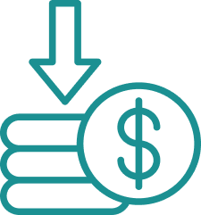
평균 치료 완료 시
30-50% 비용 절감
20년 이상의
임상 경험을 가진 의료진
보호자분들의
평균적인 실제 만족도
손길 닿는 모든 생명을
제 아이처럼 여기는
마음으로 진료합니다.
전남대학교 수의과대학 졸업
서울 개명동물병원 인턴/레지던트 수료
안양 동물병원 외과 진료수의사
부천 한사랑 동물병원 외과과장
인천 동물병원 외과과장
일산 동물병원 외과원장
안산 준 동물병원 외과과장
인천 독스 메디컬센터 외과원장
안산 아프리카 메디컬센터 외과원장
現) 안산 가나24시동물병원 대표원장
치료해주오(주) 대표원장
24시 안산 센트럴 동물병원 대표원장
현 24시 센트럴 동물 메디컬센터 대표원장
전남대학교 소동물 임상 회원
한국수의임상피부학회 회원
경기도 수의사회 회원
경기도 수의사회 동물복지분과 회원
20년 이상 임상에 전념한 수의사들이 모여있는
24시센트럴동물메디컬센터의 의료진을 소개합니다.
2001년 전남대학교 수의학과 졸업
해피올 동물병원 인턴
연수 동물병원 진료수의사
월드펫 동물병원 부원장
24시 꿈동물병원 원장
안산센트럴동물병원 내과 과장
현 부평 24시센트럴동물메디컬센터 내과 과장
대한수의사회 정회원
한국임상수의사회 정회원
해마루 기본과정/심화과정 수료
경기 수의임상컨퍼런스 참관
세계 소동물 수의학회 (WASAVA) 참관
2015년 경상대학교 수의학과 졸업
농림축산식품부 공중방역수의사
농림축산검역본부 수의검역관
해운대 I동물병원 인턴수의사
안산 G동물병원 진료수의사
광명 C동물병원 진료수의사
안산센트럴동물병원 진료과장
현 부평 24시센트럴동물메디컬센터 진료과장
대한수의사회 정회원
한국임상수의사회 정회원
전남대학교 수의과대학 졸업
서울 개명동물병원 인턴/레지던트 수료
안양 동물병원 외과 진료수의사
부천 한사랑 동물병원 외과과장
인천 동물병원 외과과장
일산 동물병원 외과원장
안산 준 동물병원 외과과장
인천 독스 메디컬센터 외과원장
안산 아프리카 메디컬센터 외과원장
現) 안산 가나24시동물병원 대표원장
치료해주오(주) 대표원장
24시 안산 센트럴 동물병원 대표원장
현 24시 센트럴 동물 메디컬센터 대표원장
전남대학교 소동물 임상 회원
한국수의임상피부학회 회원
경기도 수의사회 회원
경기도 수의사회 동물복지분과 회원
전남대학교 수의과대학 졸업
서울 개명동물병원 인턴/레지던트 수료
안양 동물병원 외과 진료수의사
부천 한사랑 동물병원 외과과장
인천 동물병원 외과과장
일산 동물병원 외과원장
안산 준 동물병원 외과과장
인천 독스 메디컬센터 외과원장
안산 아프리카 메디컬센터 외과원장
現) 안산 가나24시동물병원 대표원장
치료해주오(주) 대표원장
24시 안산 센트럴 동물병원 대표원장
현 24시 센트럴 동물 메디컬센터 대표원장
전남대학교 소동물 임상 회원
한국수의임상피부학회 회원
경기도 수의사회 회원
경기도 수의사회 동물복지분과 회원
2000년 전북대학교 수의학과졸
지구촌동물메디컬센터 인턴
이지훈 동물병원 진료수의사
부평 레인보우 동물병원 부원장
다비드 동물병원 원장
서초구 petsbe amc 응급과장
마포구 동물메디컬센터W 응급과장
부천 easy 동물메티털센터 응급과장
안산 센트럴 동물병원 응급과장
현 부평 24시 센트럴동물메디컬센터 응급과장
해마루 기본과정/ 심화과정 수료
서울 수의 임상컨퍼런스 참관
세계 소동물 수의학회 (WASAVA) 참관
20년 이상의 임상 경험을 갖춘 분야별 전문 의료진이 한자리에 모여,
진단부터 치료까지 긴밀하게 협진합니다.
전반적인 내과 질환에 대한 진료와 검사를 통한 정확한 진단과 처치,
다른 과와의 협진을 통한 체계화된 진료와 처치를 가지고 있습니다.

운동 후 피로, 기침, 호흡 변화, 실신 등 심장과 혈액순환에 관련된 증상을 살펴봅니다.
판막 질환 · 심근 질환 · 부정맥 · 심부전
외과에 준하는 모든 수술이 가능하며,
20년 이상의 실전을 통한
숙련된 외과의들의 완벽한 수술을 지향하고 있습니다.

종양 제거, 위장관 이물 제거와 장 수술, 방광·자궁 수술 등을 시행할 수 있습니다.
피부·연부조직 종양 · 위장관 이물 및 장폐색 · 방광결석 · 자궁축농증
수술 전 건강 상태와 마취에 영향을 줄 수 있는 요소를 살피고,
진찰과 검사 결과를 종합해 환자에게 맞는 수술 계획을 세웁니다.
증상과 병력, 혈액·영상검사로 전신 상태와 수술 부위를 확인합니다.
필요 시 심전도·혈압·심장초음파로 마취 위험도를 살피고 수술 방법과 범위를 정합니다.
계획에 따라 수술을 진행하며 마취 상태와 심박·혈압·호흡을 살핍니다.
통증과 합병증 여부를 확인하고 회복 상태에 맞춰 퇴원과 일상 복귀를 안내합니다.
수술을 앞둔 걱정을 덜 수 있도록 아이의 상태에 맞는 환경을 준비하고,
진료부터 회복까지 보호자와 함께 세심하게 살핍니다.
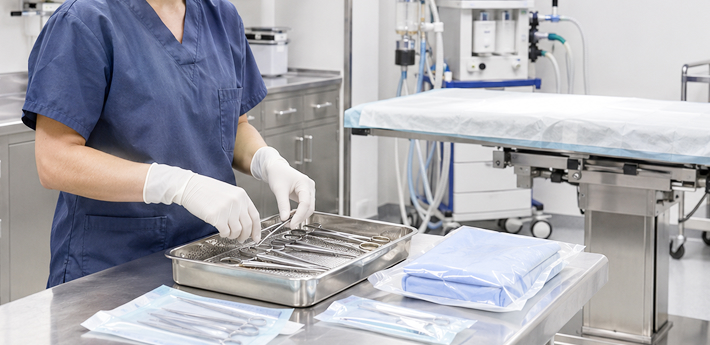
진료와 수술 공간, 사용 기구를 목적에 맞게 준비하고 청결 상태를 살핍니다.
필요한 처치가 원활하게 이어질 수 있도록 환경을 관리합니다.
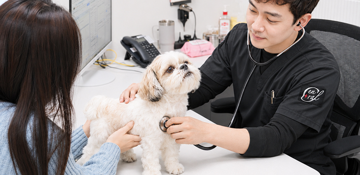
필요한 검사와 처치에 맞는 장비와 기구를 확인해 사용합니다.
진료 전에 필요한 준비를 살펴 치료 과정이 차분하게 이어지도록 합니다.
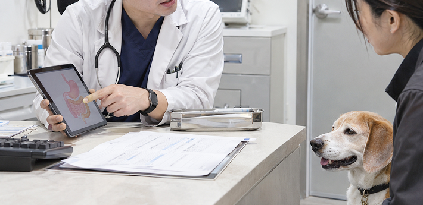
담당 수의사와 진료 인력이 아이의 상태와 치료 계획을 공유하며 진료를 이어갑니다.
보호자도 치료 과정과 궁금한 점을 확인할 수 있도록 설명합니다.
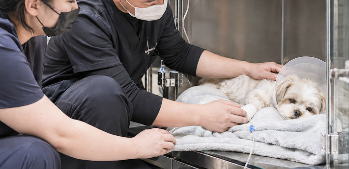
치료 전에는 건강 상태와 주의할 점을 확인하고, 치료 후에는 통증과 회복 경과를 살핍니다.
귀가 후 관찰할 점과 관리 방법도 안내합니다.
입 냄새와 씹는 습관, 잇몸 상태의 변화를 살펴
아이에게
필요한 치과 진료 방향을 안내합니다.
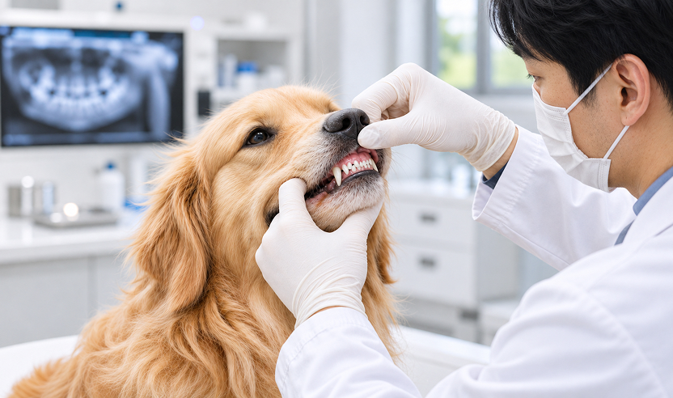
치석이나 잇몸 염증이 원인일 수 있습니다.
치아 통증이나 구강 불편이 있을 수 있습니다.
입안의 통증이나 염증 신호일 수 있습니다.
잇몸 염증이나 치주질환이 진행됐을 수 있습니다.
입 냄새나 잇몸, 식사 습관의 변화는 구강 질환의 신호일 수 있습니다.
자주 확인되는 질환과 주요 증상을 살펴보세요.
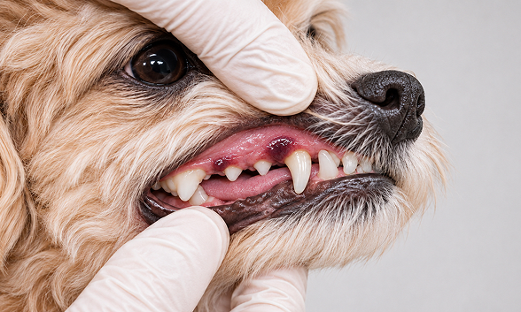
치태와 치석으로 잇몸에 염증이 생긴 상태입니다. 잇몸이 붉어지거나 붓고, 식사 중 출혈이나 입 냄새가 나타날 수 있습니다.
잇몸 붉어짐·부종 · 잇몸 출혈 · 입 냄새
정기 건강검진과 예방접종으로 아이의 건강 상태를 확인하고
생활환경에 맞는 건강관리 계획을 세웁니다.
식사, 배변, 활동량과 과거 병력 등 보호자가 느낀 변화를 확인합니다.
체중과 체형, 피부·눈·귀·구강, 심장·호흡 등 전반을 살펴봅니다.
검진 결과와 나이, 증상에 따라 혈액·소변 등 추가 검사를 상담합니다.
확인한 내용을 설명하고 이후 관리와 재검 시기를 안내합니다.
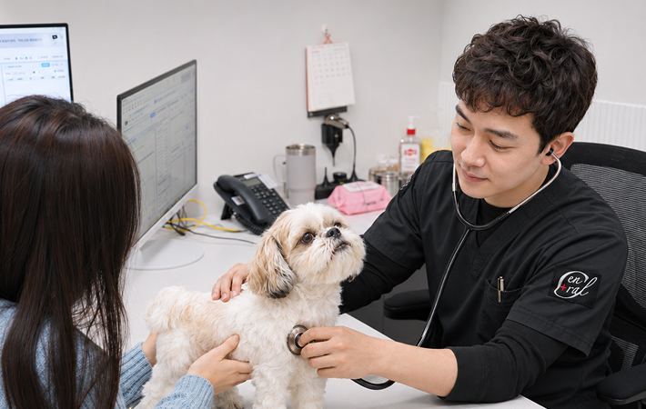
나이, 건강 상태, 이전 접종 기록과 생활환경에 따라 필요한
예방접종이 달라질 수 있습니다.
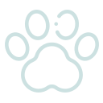
기존 접종 기록과 시기를 확인합니다.
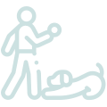
산책·모임 등 감염 노출 가능성을 살핍니다.
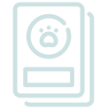
아이의 상태에 맞는 접종 계획을 안내합니다.
반려동물의 작은 변화까지 세심하게 살피기 위해,
진단부터 치료 · 재활까지 필요한 의료 장비를 갖추었습니다.
반려동물에게는 편안함을, 보호자에게는 안심을.
세심한 배려로 채운 24시센트럴동물메디컬센터의 공간을 소개합니다.
우리 아이의 변화, 조금이라도 이상이 느껴진다면
전공 수의사와 직접 상담을 받아보세요.
휴게시간
00:00-00:00 / 00:00-00:00
휴게시간
00:00-00:00 / 00:00-00:00
휴게시간
00:00-00:00 / 00:00-00:00
응급 증상이 있다면 언제든
연락 및 내원해 주세요